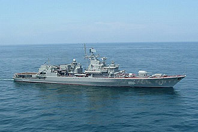

В свое время этот нехитрый текст вызвал практически международный скандал.
СРОЧНО! Бунт на корабле.
Свидомые повторяют подвиг броненосца "Потемкин".

В Черном Море взбунтовался украинский фрегат "Гетман Сагайдачный". Как
сообщается, после проведения морских учений, корабль отказался возвращаться
на базу в Севастополь. Из заявления команды следует, что она протестует
против усиления русского языка на Украине, против цензуры в СМИ, против
сползания Украины к тоталитаризму. Кроме того офицерский состав
неудовлетворен получаемой зарплатой. В данный момент корабль поднял флаг
НАТО и движется на юго-восток, предположительно, в грузинский порт Батуми.
Береговая охрана России, Украины и Абхазии уже поднята по тревоге.
Официальный Киев никак не комментирует происходящее.
(C) *** JES 2010 *** Юрий Шимановский
http://shymanovsky.mooo.com
Назад|На главную